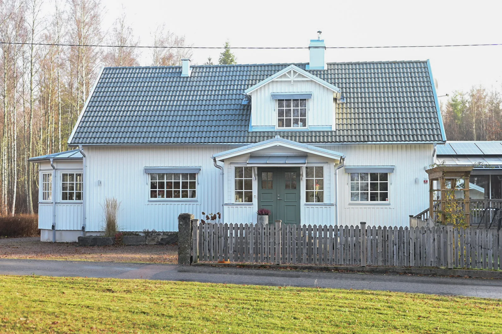
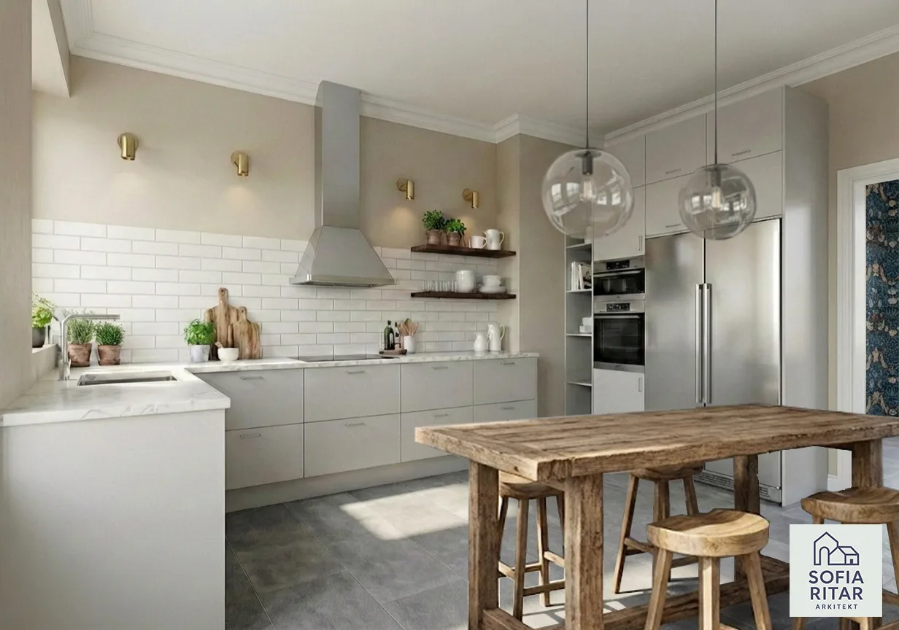
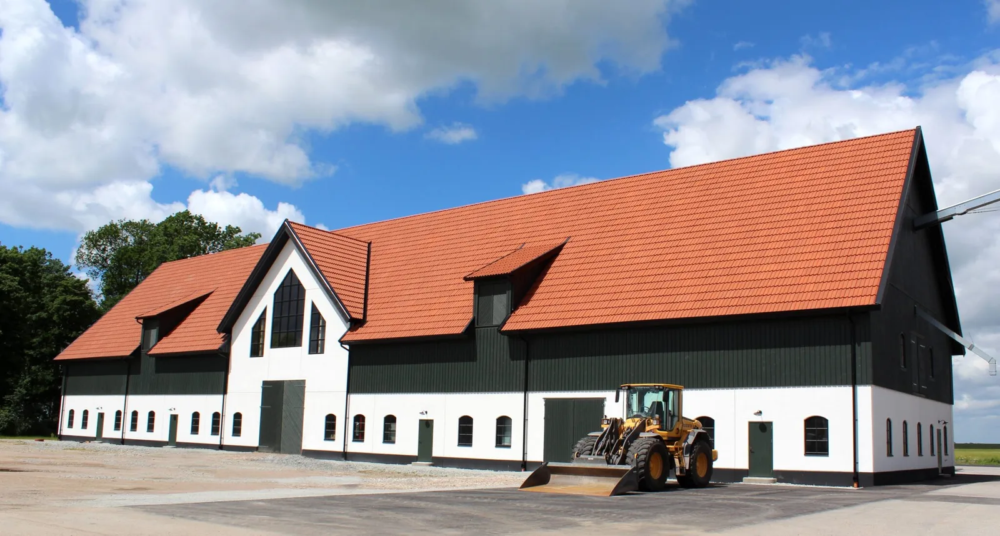
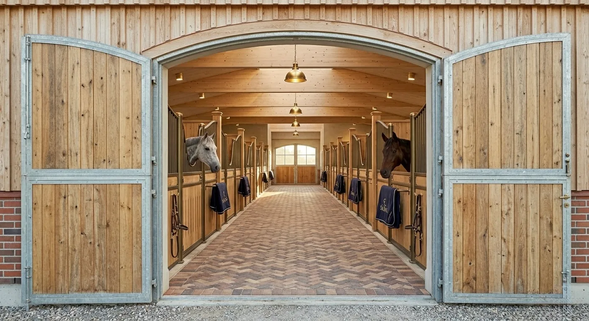
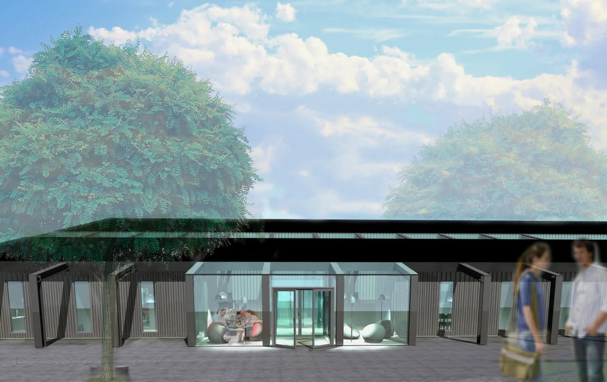
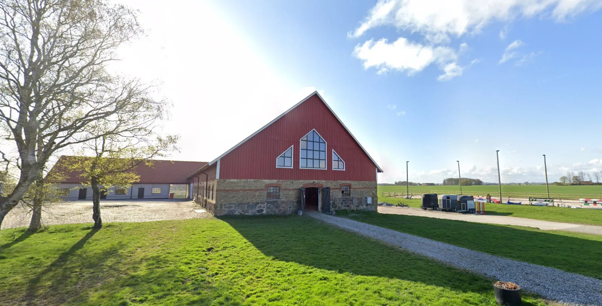

Se projekt
Se projekt Olika platser.
Samma omsorg.
Villor, gårdar och rum för verksamheter. Ett urval av nybyggnader, ombyggnader och gestaltningsförslag.
Se projekt 
Se projektVilla i Såganäs
Tillbyggnad
Se projektSekelskiftesvilla i Görslöv
Ombyggnad & inredning
Se projektSlättängs gods
Lantbruksbyggnader
Se projektHästanläggningar i Skåne
Gestaltningsförslag
Se projektKontor i Staffanstorp
Tillbyggnad & verksamhet
Se projektHästgård på Benstorp
Renovering & återuppbyggnad Se projekt
Se projekt